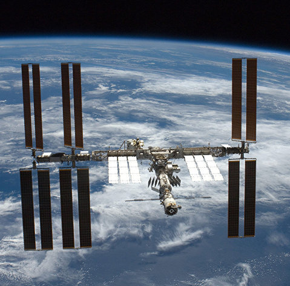

МКС

Междунароодная космиическая стаанция, сокр. МКС— пилотируемая орбитальная станция, используемая как многоцелевой космический исследовательский комплекс;
эксплуатируется с конца 1998 года по настоящее время (странами согласована эксплуатация по 2024 год включительно, рассматривается продление срока работы до 2028 или 2030 года).
МКС — совместный международный проект, в котором участвуют 14 стран: Россия, США, Япония, Канада и входящие в Европейское космическое агентство Бельгия, Германия,
Дания, Испания, Италия, Нидерланды, Норвегия, Франция, Швейцария, Швеция.
МКС внесена в Книгу рекордов Гиннесса как самый дорогой объект, построенный человеком. Общая стоимость создания станции составляет более 150 миллиардов долларов.